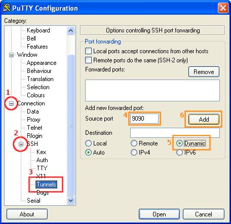
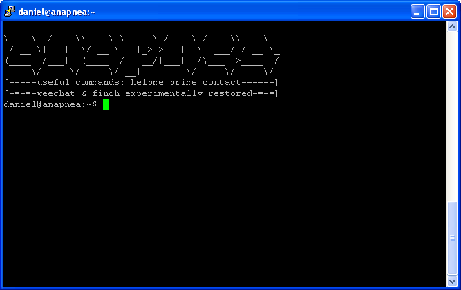
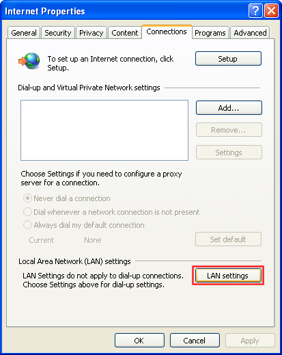
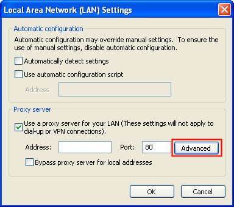
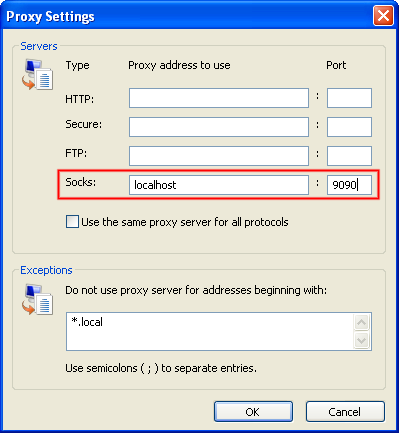

Navigate to the Tunnels configuration page, and add a new dynamic tunnel on port 9090.
The port you use doesn't actually matter, however for this example we'll use 9090.
If you can't use 9090, you must remember to use the same port here as you do later.

Having connected, you are now tunneling over SSH. You need to leave this window open the whole time while you browse, since PuTTY is keeping the tunnel open.

Clicking on Settings in Internet Explorer, or Proxy Settings in Google Chrome, should open this dialogue.
Navigate through to the Advanced Proxy section and add localhost:9090 as a SOCKS Proxy.


